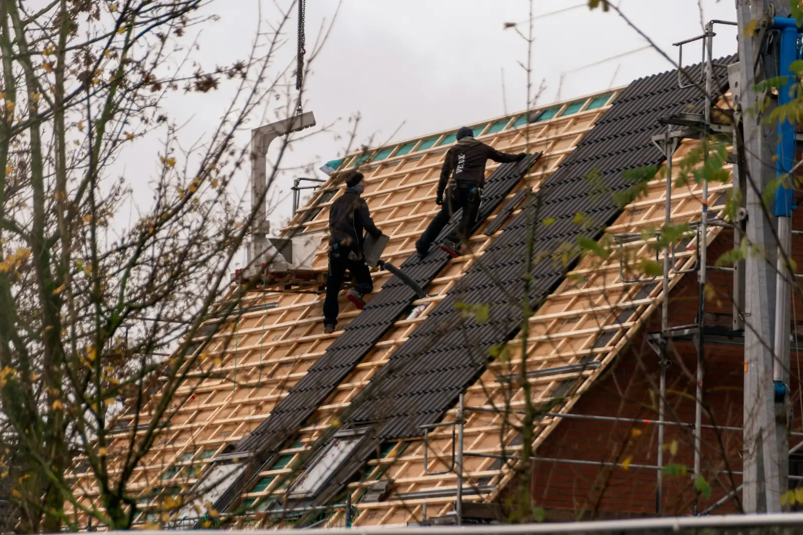

Réfection de toiture
Remplacement complet de la couverture en bardeaux.

Travaux de toiture à Valleyfield et dans les environs. Parlez-nous de votre toit, on vous revient avec une soumission.
Contenu d'exemple : la liste sera ajustée à vos services réels.
Remplacement complet de la couverture en bardeaux.
Travaux sur toitures plates et membranes.
Bardeaux arrachés, infiltrations, sections endommagées.
Vérification de l'état du toit avant que ça coule.
Aérateurs et ventilation pour un toit en santé.
Étanchéité autour des cheminées, évents et murs.
Couvreur · Salaberry-de-Valleyfield
Basée à Valleyfield, au service de la région.
Un appel au 450 370-4569 et vous joignez l'entreprise, sans intermédiaire.
Le formulaire en ligne vous permet de faire une demande de soumission en une minute, même le soir.
Par téléphone ou avec le formulaire : décrivez votre besoin en quelques lignes.
On discute de votre situation et on vous propose la suite, soumission à l'appui.
On planifie avec vous et on s'occupe du reste.
Secteurs à confirmer avec vous.
Appelez-nous ou remplissez le formulaire : on vous revient rapidement.
Téléphone450 370-4569Cet aperçu a été préparé gratuitement pour Toiture du Suroit. Version finale avec vos vrais textes, vos photos et vos services : 995 $ prix fixe, en ligne en environ 7 jours.